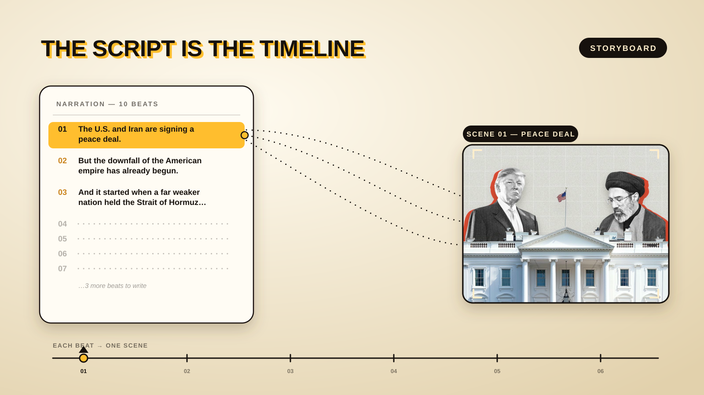
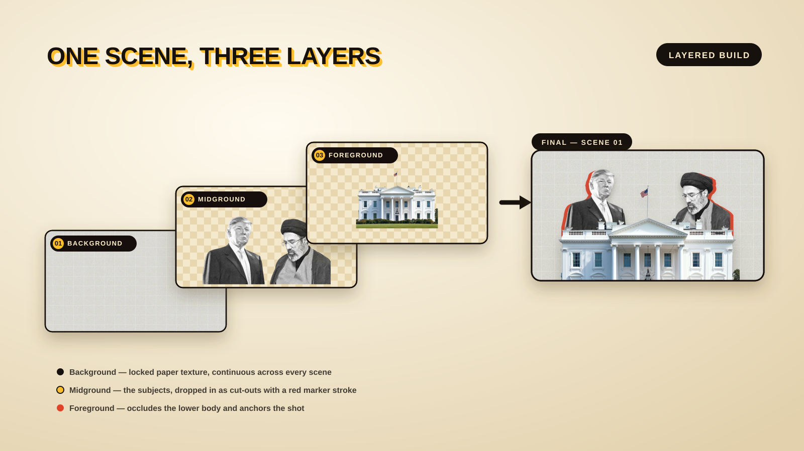

I wanted a piece of broadcast-style B-roll: cut-out characters, paper-textured backgrounds, charts that draw themselves, comic speech bubbles, a burning dollar — all narrated and timed precisely to a voiceover. Instead of editing it by hand in a timeline, I built it as code using Remotion (React for video).
This post is the exact, repeatable workflow — from storyboard to final render. Here's the map:
01Storyboard & Script
Everything starts with the narration, written as short beats — one idea per line. The script is the timeline.

Map each beat to a visual
Next to every line, I noted what's on screen: peace deal → handshake; "$116 a barrel" → tanker + price counter; "leaving the dollar" → Xi & Putin with speech bubbles.
The full scene breakdown
Every beat as a layer-and-prompt sheet — background, midground, foreground, the asset prompts, and the cut.
| # | Voiceover line | Background | Midground asset | Foreground asset | Midground prompt | Foreground prompt | Transition |
|---|---|---|---|---|---|---|---|
| 01 | "The U.S. and Iran are signing a peace deal." | Locked paper / photoshop texture (mo-photoshop-background.png) | Halftone cut-out portraits — Trump (L) & Khamenei (R) with red marker stroke | White House facade cut-out (front-on, settles in front) | High-contrast B&W halftone cut-out portrait of [leader], chest-up, bold newsprint dot texture, transparent background, sharp edges | Flat front-on illustration of the White House facade, clean vector, warm soft shadow, transparent background | Hard cut → |
| 02 | "But the downfall of the American empire has already begun." | The Nation op-ed page (built in code — masthead, headline, columns) | — none (typographic) | N/A — vector layout, real article text + amber highlighter sweep | N/A | Hard cut → | |
| 03 | "…held the Strait of Hormuz hostage. Oil prices skyrocketed to $116 a barrel." | Oil tanker cut-out + keyed ocean video (ship sails in over looping waves) | Oil price counter + oil-barrel icon (rises on the foreground band) | Side-profile flat editorial illustration of a large black oil tanker / cargo ship, transparent background · + looping ocean-wave clip with alpha | Flat isometric oil-barrel icon, marigold + warm-black, bold outline, transparent background | Slide-out → | |
| 04 | "…inflation to a three-year high. A nation owing nearly $39 trillion — bigger than its entire economy." | Self-drawing CPI line chart + isometric US map | "$39 TRILLION" headline (pops to front) | Isometric United States map with subtle stars-and-stripes texture, warm shadow, transparent background (chart drawn in code) | N/A — heavy display type, code-driven | Closer move → | |
| 05 | "Where the interest alone costs more than its entire military." | US map (debt) + worker cut-out (labour) vs. soldier + tank cut-outs (military) | "Interest: $1 trillion" label | Cut-out of a U.S. construction worker, half-body, transparent background, red offset marker outline · + cut-out U.S. soldier · + flat military tank illustration | N/A — text label, code-driven | Hard cut → | |
| 06 | "And the world is quietly leaving the dollar behind." | B&W cut-out of Xi & Putin shaking hands (+ comic speech bubbles) | Tiananmen gate cut-out (spans the foreground base) | Black-and-white cut-out photo of two world leaders shaking hands, transparent background, red offset marker outline | Flat illustration of the Tiananmen gate / Chinese government building, transparent background, warm shadow | Hard cut → | |
| 07 | "Empires don't end with a war. They end with a bill they can no longer pay." | Burning $100 bill (transparent video, floats above) | Typewriter punchline + closing vignette | A single U.S. $100 bill burning at one edge with flames and smoke curling up, alpha / transparent background, 4K, slow-motion | N/A — typewriter text reveal, code-driven | Fade to black |
Layer model Background (locked, continuous) → Midground (the subject, enters with a red marker stroke) → Foreground (occludes the lower body, anchors the shot). Code-driven layers are marked N/A for prompts.
Lock a visual system
One background, one font stack, one accent palette. That consistency is what makes ten separate scenes feel like a single film.
- Shared paper-textured background across all scenes
- Heavy display type for headlines; an accent orange/red for emphasis
- A signature "marker stroke" outline on every cut-out character
02Setup & Building Each Scene
RemotionReactTypeScriptGather the source material
Before any code, I collect every asset the beats need — stock photos, AI-generated images, a transparent video clip, even a real newspaper article for credibility. Anything that isn't drawn in code gets sourced up front.
Set up Remotion & a reusable scene pattern
After scaffolding the Remotion project, I built one repeatable pattern that every scene follows:
- Each scene lives in its own folder.
- Each scene is prop-driven — a schema defines every position, size, timing and colour.
- Each scene renders the shared background first, so beats stay visually continuous.
// every scene: a schema + a component + default props
export const mySceneSchema = z.object({
backgroundAsset: z.string(),
subjectX: z.number(),
subjectStartFrame: z.number(),
// ...everything tweakable
});One background, three layers
Every scene is assembled the same way: a locked shared background, the subject(s) dropped in as a midground cut-out, and a foreground element that occludes the lower body and anchors the shot. Here's the peace-deal scene broken into its three layers:

Cut the assets out (keying)
The key step is making each asset transparent. For stills I key out the background to a PNG (flood-fill from the edges, then keep only the largest connected shape so interior fills survive). For footage I transcode to a transparent VP9 webm and play it with <OffthreadVideo transparent>.
Animate with intent
Two functions do most of the work: spring() for pop-ins and interpolate() for moves, draws and fades. Signature touches get reused across scenes — the offset marker stroke, a typewriter reveal, comic-style speech bubbles.
const pop = spring({ frame: frame - startFrame, fps, config: { damping: 14 } });
const y = interpolate(pop, [0, 1], [120, 0]); // rise into place03Preview & Tune in Remotion Studio
Remotion Studio gives a live preview with an editable props panel. I register each scene with inline default props (required so Studio can save edits back to the file) and tune visually — dragging positions, retiming entrances — then hit Save.
04Assemble the Master Sequence
All beats get chained into one composition with Remotion's <Series>, each playing for a set number of frames, each handed its tuned props.
<Series>
<Series.Sequence durationInFrames={D.peace}><PeaceDeal {...props} /></Series.Sequence>
<Series.Sequence durationInFrames={D.ocean}><OceanTanker {...props} /></Series.Sequence>
{/* ...all beats in order */}
</Series>05Voiceover & Timing the Cuts to the Word
This is what makes it feel produced. Steps:
- Generate the VO (ElevenLabs).
- Transcribe with timestamps (Whisper) to get exact start/end times for every line.
- Time each beat to its line window, and retime the scene's internals so key moments land on the word — e.g. the price counter hits "$116" exactly as it's spoken.
- Embed the audio in the composition.
06Music, Polish & Final Render
Score it
Generated a tense documentary track to match the mood, then layered it under the narration at low volume with fade-in/out so the voice stays on top.
Optimise for smooth playback
One oversized background asset (28 MB) was making the preview stutter and dragging the audio with it. Cropping/optimising it to the visible area (≈4 MB) fixed the preview and sped up renders — with zero visible difference.
Render
One command produces the final MP4 with mixed audio.
npx remotion render src/index.ts EmpireDownfallSequence out/final.mp4The whole thing in one line
Script the beats → lock a style → build each beat as a prop-driven Remotion scene with cut-out assets → tune in Studio → chain with <Series> → transcribe the VO and time cuts to it → add ducked music → optimise & render.
Takeaways
- The script is the timeline. Beats in, scenes out.
- Code beats a timeline when you want precision, reusability, and to-the-frame VO sync.
- Props everywhere turns "redesign" into "adjust a number."
- Transcribe the VO — guessing timings never matches doing it from real timestamps.